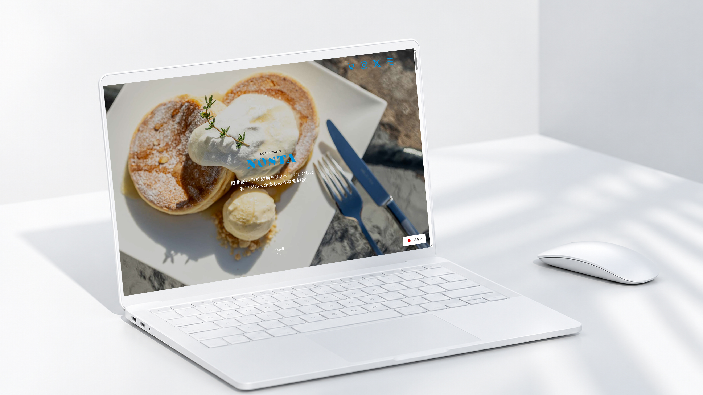
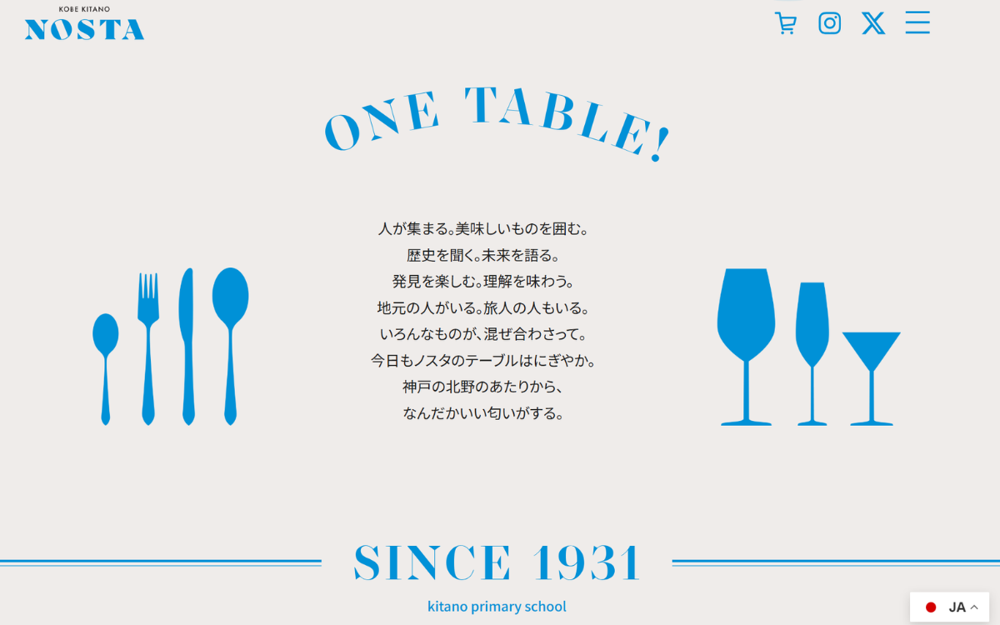
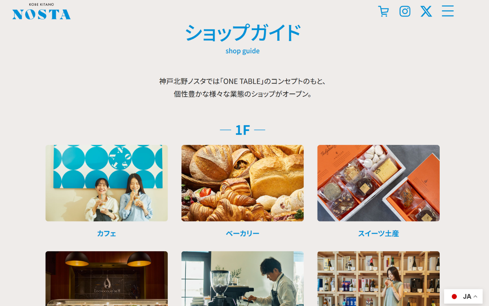

制作概要
Outline
歴史ある旧北野小学校跡地をリノベーションして誕生した、神戸の“食”が集う複合施設「神戸北野ノスタ（KOBE KITANO NOSTA）」の公式サイト。「ONE TABLE」をコンセプトに、カフェ・ベーカリー・ロースタリー・レストランなど多彩な店舗情報や施設案内を魅力的に届けるWebサイトを制作しました。
Target
神戸・北野異人館街を訪れる国内外の観光客、日常的にランチやカフェ・買い物を楽しむ地域住民、およびイベント・講堂利用を検討する団体・旅行会社
Period & Role
デザイン：1ヶ月（Figma / Photoshop）
コーディング：3週間（HTML / CSS / JavaScript / PHP）
担当領域：デザイン（共同制作） / コーディング / CMS（WordPress） / 多言語対応
Purpose
神戸北野エリアの新たな観光・グルメ拠点としての認知獲得、各ショップや最新イベント情報へのスムーズな動線設計、および観光バス・講堂利用の問い合わせ獲得
内容詳細
Detail
「ONE TABLE — 神戸の食を、一つの大きなテーブルで」
旧校舎の温もりとモダンな洗練が交差するポータル体験。


小学校跡地という歴史的建造物のノスタルジックな趣と、現代の洗練されたスイーツ・グルメ体験が融合した世界観を表現するため、落ち着きのあるトーンと抜け感のある余白でデザインを設計しました。
1Fのスイーツ・カフェ・日本酒ショップ、2Fのビュッフェやレストランなど、多岐にわたるテナント情報をユーザーが直感的に探し出せるよう、分かりやすいフロア別ショップガイドを構築。
施設スタッフがイベント告知や催事情報を手軽に発信できるよう、WordPressを用いたカスタム投稿機能を実装。観光客の現地利用を想定したモバイルファーストな操作性にも配慮しています。